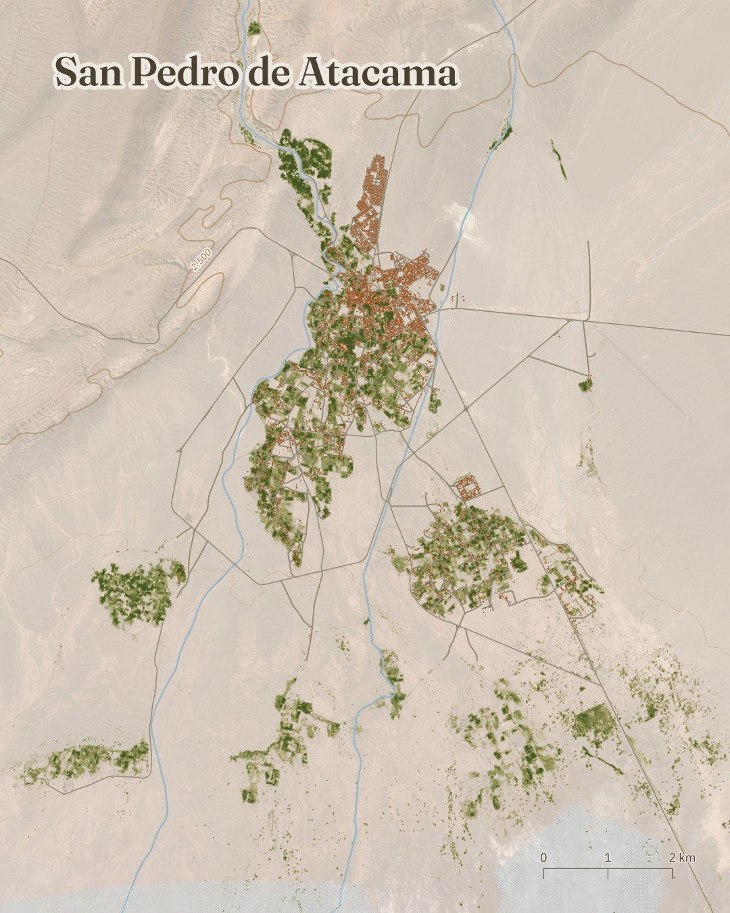
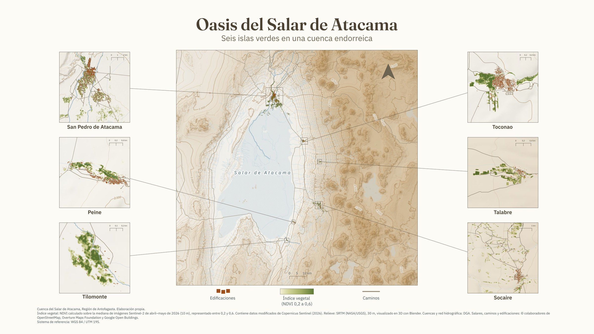
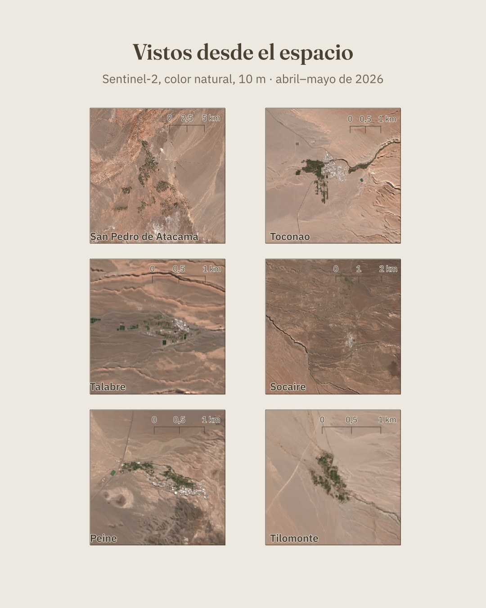
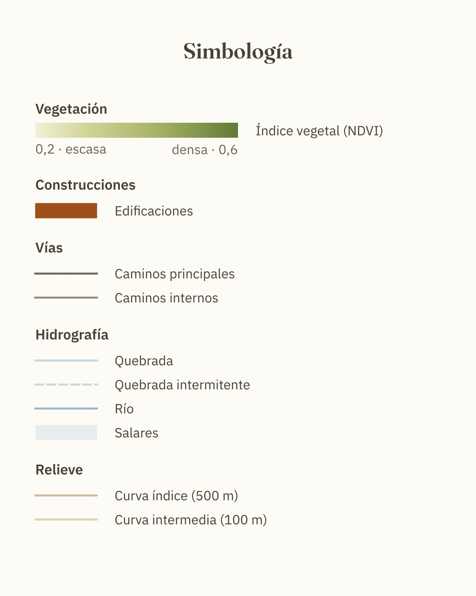

Oasis del Salar de Atacama
Seis islas verdes en una cuenca endorreica.
La serie sitúa seis oasis en el borde del Salar de Atacama, Región de Antofagasta: San Pedro de Atacama, Toconao, Talabre, Socaire, Peine y Tilomonte. Cada lámina muestra un oasis con su vegetación, sus edificaciones y sus caminos sobre imagen satelital, a una escala distinta según su tamaño.

Cada oasis


Vistos desde el espacio y simbología


Vistos desde el espacio
Sentinel-2, color natural, 10 m, abril–mayo de 2026.


Simbología
Método y fuentes
Índice vegetal (NDVI). Calculado sobre la mediana de Sentinel-2 SR Harmonized entre el 1 de abril y el 31 de mayo de 2026 (escenas con menos de 5 % de nubosidad), a 10 m. Se muestra como gradiente continuo de 0,2 a 0,6; bajo 0,2 es transparente. El rango de 0,2 a 0,6 es de representación, no de cálculo. El índice mide actividad de la vegetación; no distingue cultivos de vegas, bofedales ni algarrobales.
Imágenes satelitales. Sentinel-2, color natural, 10 m en los recuadros de cada oasis.
Relieve y curvas de nivel. SRTM (NASA/USGS), 30 m. Relieve visualizado en 3D con Blender; curvas suavizadas, derivadas del modelo de elevación.
Edificaciones. OpenStreetMap, Overture Maps y Google Open Buildings (estas dos últimas, detecciones automáticas). Pueden contener errores y no son un catastro.
Cuencas e hidrografía. DGA. Límites regionales. División Político-Administrativa 2023. Salares, caminos y edificaciones. © colaboradores de OpenStreetMap, Overture Maps Foundation y Google Open Buildings.
Contiene datos modificados de Copernicus Sentinel (2026).
Sistema de referencia: WGS 84 / UTM 19S. Elaboración propia.